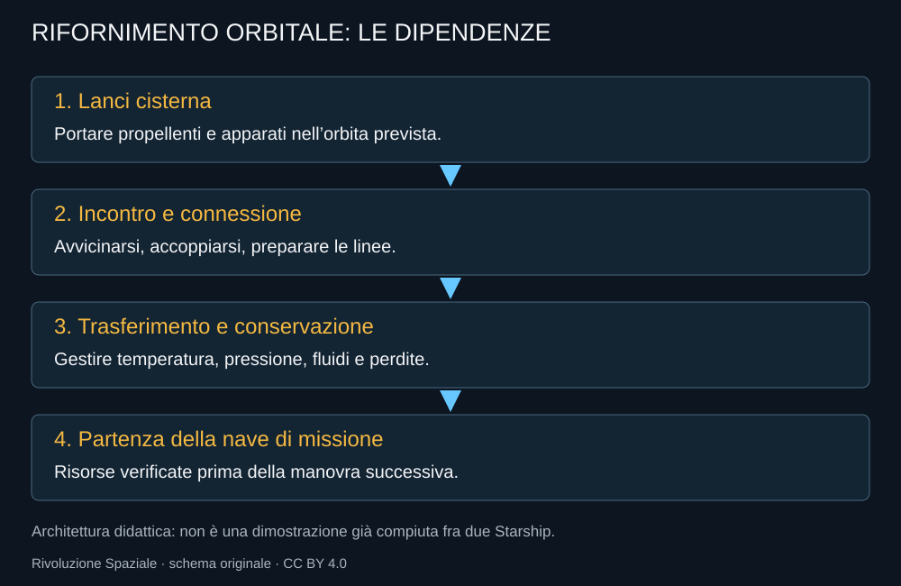

Il rifornimento orbitale è il punto in cui Starship smette di essere soltanto un grande lanciatore. Una nave che riceve propellente dopo essere arrivata nello spazio può svolgere missioni che sarebbero penalizzate dalla necessità di portare tutto attraverso la salita iniziale. Ma il vantaggio teorico deve diventare un’operazione affidabile.
Perché aggiungere propellente in orbita
Il razzo consuma molto propellente per raggiungere lo spazio. Se può riceverne altro, ripristina parte delle risorse prima della manovra successiva. Non annulla la fisica: sposta nello spazio un’operazione che sulla Terra sembra normale e che, in quel contesto, è complessa.

Una piccola esplorazione della fisica
L’equazione ideale del razzo collega la variazione di velocità al logaritmo del rapporto fra massa iniziale e finale. L’effetto non cresce linearmente: portare più propellente porta anche più massa da accelerare. Il rifornimento dopo la salita cambia la condizione da cui inizia la manovra successiva.
Δv = Isp × g₀ × ln(mᵢ/m𝒇). Esempio didattico con Isp fissato a 380 secondi, non specifica garantita di una versione Raptor. Ignora gravità, resistenza, riserve, manovre e limiti strutturali. Non calcola la prestazione di una missione Starship.
Il liquido non si comporta come in una cisterna stradale
In assenza di una gravità dominante, il fluido non resta semplicemente sul fondo. Si muove, bagna superfici e può mescolarsi al gas. Pressione e temperatura determinano che cosa arriva a una linea di trasferimento. Un accoppiamento fra veicoli deve convivere con tenuta, condizionamento termico e controllo dell’assetto.
I propellenti criogenici introducono poi il tempo. Il calore entra anche quando non si accendono i motori. Parte del liquido può evaporare; occorre gestire pressione, conservazione e perdite. Un deposito capace di attendere diverse cisterne deve avere una strategia termica, non soltanto serbatoi grandi.
La prova del 2024 e ciò che non prova
Nel Flight 3 viene eseguito un trasferimento interno fra serbatoi della stessa nave. NASA lo descrive come un passo nello sviluppo della gestione dei fluidi criogenici; un successivo riepilogo tecnico conserva il risultato. Il test non include due Starship accoppiate e non certifica un deposito operativo.
Per un trasferimento fra veicoli bisogna dimostrare rendezvous, collegamento, preparazione delle linee, movimento di entrambi i propellenti nelle quantità e condizioni necessarie, misurazione delle risorse e separazione sicura. Alcune funzioni hanno precedenti in altri programmi, ma l’insieme deve essere verificato per questa architettura.
Le dipendenze del rifornimento
Una missione distribuita su molti lanci
Più voli significano più occasioni di ritardo. Il deposito deve poter aspettare e la missione deve tollerare una cisterna rinviata. Il numero necessario dipende dal carico utile effettivo di ciascuna nave, dalla destinazione e dalle riserve. Pubblicare un unico numero senza la configurazione sarebbe fuorviante.
Il rifornimento è dunque una promessa di capacità e un problema di organizzazione. Se funziona regolarmente, apre missioni molto grandi. Se richiede una concatenazione fragile, trasferisce il rischio dal singolo lancio all’intera campagna. La verifica deve riguardare anche questo.
Fonti pubbliche e tracce
- NASA NTRS, Liquid Propulsion Systems. Principi e confronti fra cicli dei motori a propellente liquido.
- NASA, dimostrazione di trasferimento nel terzo volo. 14 marzo 2024: trasferimento interno fra serbatoi, non rifornimento fra due Starship.
- NASA NTRS, In-Space Cryogenic Propellant Management. Riepilogo tecnico del test 2024 e dei problemi criogenici.
- NASA, Zero-Boil-Off Tank Experiments. Ricerca sulla gestione dei propellenti, non certificazione di un deposito Starship già operativo.
Consultare l’atlante tecnico
Caratteristiche, schemi, configurazioni e limiti: Rifornimento orbitale.